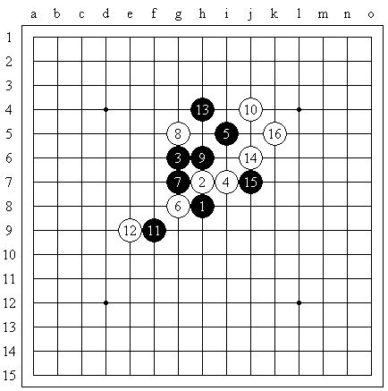
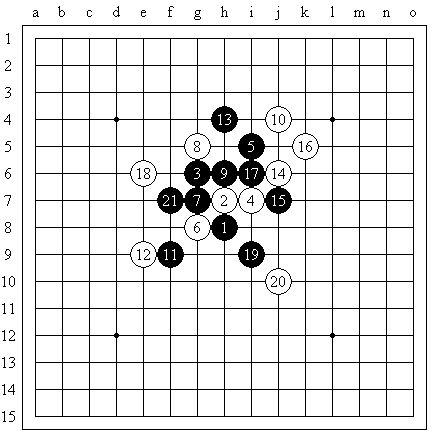
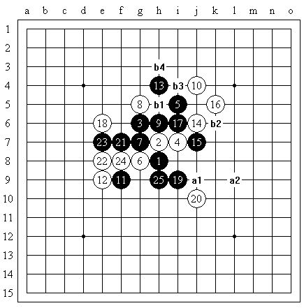
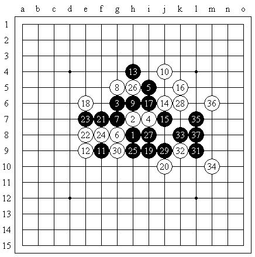
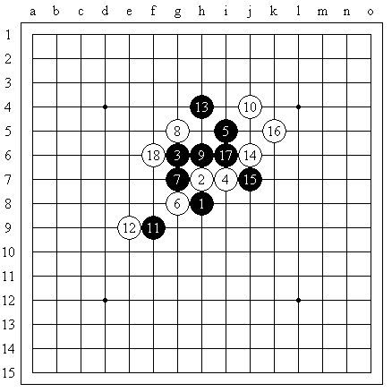

Comment on Huang Jinxian (B) vs. Tunnet Taimla (W)
#1 Comment on Huang Jinxian (B) vs. Tunnet Taimla (W) 作者：舍露里 发表时间：2011-8-13 13:27:40
Round 5, AT, WC
Huang Jinxian (Black) vs. Tunnet Taimla(White)
Original: ShowPost.asp?ThreadID=14709

This picture shows the first 16 moves. I cannot say much on the first 14 moves, but the really exciting part starts from 15 and 16 moves. Can you imagine that black wins after 16?

Move 17 breaks the trap and kills. White has two ways to defend: e6 or f6.
If 18-e6, 19 and 20 should be like this. Afterwards, 21 kills. Then, white can only defend at e8. Other defense points are all too weak.

As in the picture, white can constrain black by the potential four with 22, so there’s no need for 23 to play at f6. 23 blocks white. 24 defends. 25 expands. By now, black can kill by: a1, a2; or b1,b2,b3,b4. B1 is the common defense for white. So, what if 26 plays at b1?

As the picture shows, black can still win by continuous attack. Therefore, 18-e6 is not difficult for black. In the real game, white did not play this move, but 18-f6 instead.

After 18-f6, black has two options. Firstly, black can attack at the upper side, but the effect is not good. White constrains black from both left and white. Secondly, black can expand at the lower side, because the space is large enough. However, white has the initiative at the upper-right side. White can kill black at any time if black doesn’t play well. How does black solve this problem?
/*760*90，创建于2012-2-9*/ var cpro_id = 'u761865';
#2 Re:Comment on Huang Jinxian (B) vs. Tunnet Taimla (W) 作者：梧桐风 发表时间：2011-8-13 14:01:20
nice#3 Re:Comment on Huang Jinxian (B) vs. Tunnet Taimla (W) 作者：nara 发表时间：2011-8-13 17:58:57

［此帖子已被 nara 在 2011-8-13 17:59:52 编辑过］
#4 Re:Comment on Huang Jinxian (B) vs. Tunnet Taimla (W) 作者：欧艾沃 发表时间：2011-8-14 4:01:16
Well, there is nothing special about this game, Tunnet just played a very bad 16th move, he should have played a calm move - 16-f6. No matter how good black is in attacking, eventually it will lose the tempo and white will have a chance to win. He himself was really pissed off that he chose to play such an aggressive and a stupid move. Actually, black does not need to calculate the sure win from the start since the only thing black can do in this position is to find good attack moves and try to hope it has a win. In this case, black had a win.#5 Re:Re:Comment on Huang Jinxian (B) vs. Tunnet Taimla (W) 作者：松痕 发表时间：2011-8-14 21:12:09
引用：
原文由 欧艾沃 发表于 2011-8-14 4:01:16 :
Well, there is nothing special about this game, Tunnet just played a very bad 16th move, he should have played a calm move - 16-f6. No matter how good black is in attacking, eventually it will lose the tempo and white will have a chance to win. He himself was really pissed off that he chose to play such an aggressive and a stupid move. Actually, black does not need to calculate the sure win from the start since the only thing black can do in this position is to find good attack moves and try to hope it has a win. In this case, black had a win.

#6 Re:Comment on Huang Jinxian (B) vs. Tunnet Taimla (W) 作者：欧艾沃 发表时间：2011-8-15 1:04:47
My point is, I would like Huang to show us how to continue with black in case of 16-f6. Everybody should be able to find a win after 16-16 by using programs. The fact that Huang found it behind the board, good for him, his calculating ability is definitely very good. I would like the game comments to be concentrated on best possible moves and continuations.